设计模式复习
面向对象设计与复用
- 类的设计包括:
- 类的组织与表示
- 行为的组织与表示
- 属性的组织与表示
2.类设计的难点在于变化的存在:
职责的变化: 接口 功能的变化,如:功能增加 参数个数与类型变化 可访问性变化
实现的变化:
数据表示的变化,如: 数据的类型 数量 可访问性 组织形式等
行为的变化,如行为过程 行为结果
3.变化的适应形式:
- 修改既有代码(不推荐)
- 扩展既有代码: 继承(垂直) 依赖关联聚合组合(水平)
- 关系模型是设计模式的工具基础
- 设计原则是设计模式的行为准则
六种关系模型
- 依赖 use-a
- 聚合 know-a
- 关联 has-a
- 组合 component
- 泛化 implement
- 实现 implement
依赖关系
对于两个相对独立的对象，当一个对象负责构造另一个对象的实例，或者依赖另一个对象的服务时，这两个对象之间主要体现为依赖关系。可以简单的理解，就是一个类A使用到了另一个类 B，而这种使用关系是具有偶然性的、临时性的、非常弱的，但是B类的变化会影响到 A。
代码层面
局部变量 方法中的参数 静态方法的调用
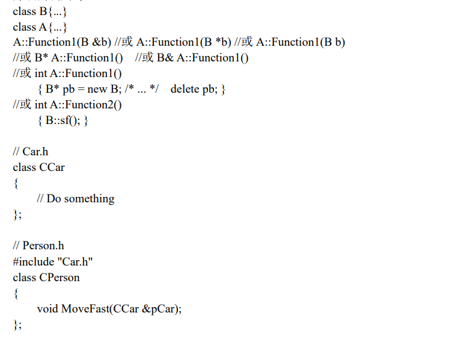
UML表示
虚线箭头，类 A 指向类 B。
依赖集中于主动方的某个行为,放在主动的易变的一侧
- 单向依赖
- 自身依赖
- 双向依赖
关联关系
对于两个相对独立的对象，当一个对象的实例与另一个对象的一些特定实例存在固定的对应关系时，这两个对象之间为关联关系。关联关系体现的是两个类、或者类与接口之间语义级别的一种强依赖关系，比如我和我的朋友；这种关系比依赖更强、不存在依赖关系的偶然性、关系也不是临时性的，一般是长期性的，而且双方的关系一般是平等的。
例如：客户和订单(1:N)，公司和员工(1:N)，主人和汽车(1:N)，师傅和徒弟(1:N)，丈夫和妻子(1:1)，飞机和航班(1:N)，学生和课程(N:N)
代码层面
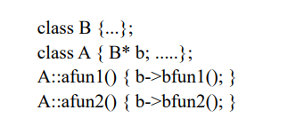
UML表示
实线箭头，类 A 指向类 B，表示单向关联。如果使用双箭头或不使用箭头表示双向关联。
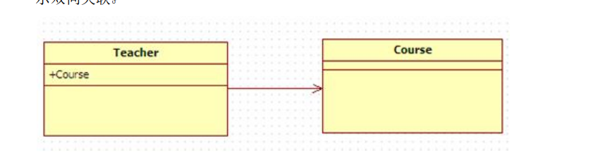
- 单向关联: 只有某一方拥有另一方的引用
- 自身关联: 拥有一个自身的引用
- 双向关联: 双方都拥有对方的引用，都可以调用对方的公共属性和方法。
聚合关系
当对象 B 被加入到对象 A 中，成为对象 A 的组成部分时，对象A 和对象B之间为聚合关系。聚合是关联关系的一种特例。聚合指的是整体与部分之间的关系，体现的是整体与部分、拥有的关系，即 has-a 的关系，此时整体与部分之间是可分离的，可以具有各自的生命周期，部分可以属于多个整体对象，也可以为多个整体对象共享；
代码层面
聚合和关联关系是一致的，只能从语义级别来区分；关联关系中两个类是处于相同的层次，而聚合关系中两个类是处于不平等的层次，一个表示整体，一个表示部分。
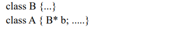
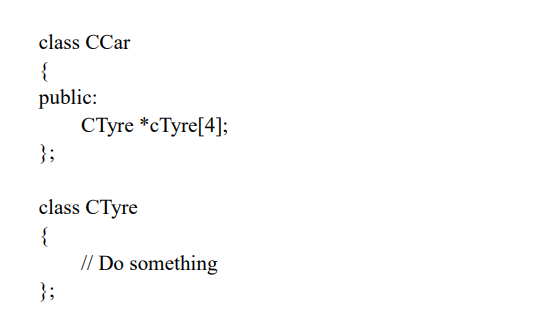
UML表示
尾部为空心菱形的实线箭头（也可以没箭头），类A 指向类B。
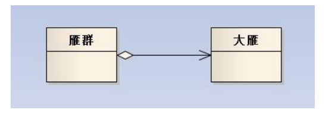
组成关系
组合也是关联关系的一种特例，体现的是一种 contains-a 的关系，这种关系比聚合更强，也称为强聚合；同样体现整体与部分间的关系，但此时整体与部分是不可分的，整体的生命周期结束也就意味着部分的生命周期结束。整体类负责部分类对象的生存与消亡
例如：公司和部门，人和大脑、四肢，窗口和标题栏、菜单栏、状态栏。
代码层面
组合和关联关系是一致的，只能从语义级别来区分。组合跟聚合几乎相同，唯一的区别就是**“部分”不能脱离“整体”单独存在**，就是说，“部分”的生命期不能比“整体”还要长。
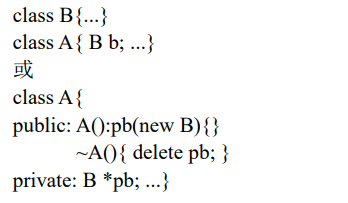
泛化关系
泛化是一种一般与特殊、一般与具体之间关系的描述，具体描述建立在一般描述的基础之上，并对其进行了扩展。 比如狗是对动物的具体描述，一般把狗设计为动物的子类。
代码层面
继承实现
UML表示
空心三角形箭头的实线，子类指向父类
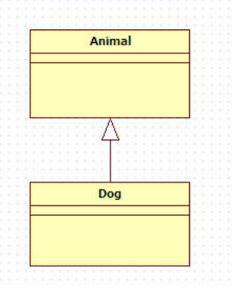
实现关系
实现是一种类与接口的关系，表示类是接口所有特征和行为的实现。从广义上来说，类模板和模板类也是一种实现关系。
代码层面
实现一般通过类实现接口来描述的。
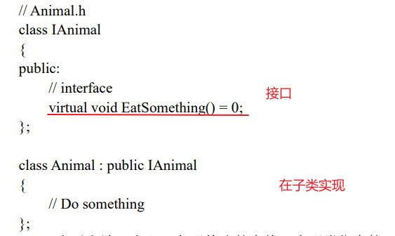
UML表示
空心三角形箭头的虚线，实现类指向接口
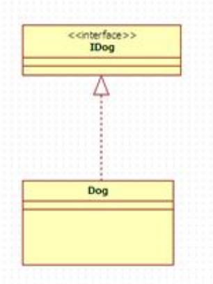
泛化和实现的区别就在于子类是否继承了父类的实现，如有继承则关系为泛化，反之为实现。
几种关系所表现的强弱程度依次为：泛化/实现>组合>聚合>关联>依赖。
如何适应变化实现复用
基于关系模型通过扩展既有代码来适应变化实现复用。
变化:
- 职责 继承/组合 职责的变化，一般需要同步修改类的使用者。
- 行为 继承/组合
- 综合使用组合和继承，参考上面关系模型的各种扩展型
- 组合优先
类的设计原则
- 开闭原则
- 里氏代换原则
- 迪米特原则
- 单一职责原则
- 接口分隔原则
- 依赖倒置原则
- 组合/聚合原则
开闭原则是面向对象的可复用设计的基石,其他原则是实现开闭原则的手段和工具
- 设计目标:开闭原则,里氏代换原则,迪米特原则
- 设计方法:单一职责原则 接口分隔原则 依赖倒置原则 组合/聚合原则
开闭原则
软件实体（模块，类，方法等）应该对扩展开放，对修改关闭。
开闭原则是判断面向对象设计是否正确的最基本的原理之一。
系统设计需要遵循开闭原则的原因:
-
稳定性。开闭原则要求扩展功能不修改原来的代码，这可以让软件系统在变化中保持稳定。
-
扩展性。开闭原则要求对扩展开放，通过扩展提供新的或改变原有的功能， 让软件系统具有灵活的可扩展性。
遵循开闭原则的系统设计，可以让软件系统可复用，并且易于维护。
开闭原则实现方法:
可以把这些不变的部分加以抽象成不变的接口
接口的最小功能设计原则。
模块之间的调用通过抽象接口进行
- 接口可以被复用，但接口的实现却不一定能被复用。
- 接口是稳定的，关闭的，但接口的实现是可变的，开放的。可以通过对接口的不同实现以及类的继承行为等为系统增加新的或改变系统原来的功能，实现软件系统的柔性扩展。
开闭原则的相对性
构建100%满足开闭原则的软件系统是相当困难的，这就是开闭原则的相对性。但在设计过程中，通过对模块功能的抽象（接口定义），模块之间的关系的抽象（通过接口调用），抽象与实现的分离（面向接口的程序设计）等，可以尽量接近满足开闭原则。
里氏替换原则
所有引用基类的地方必须能透明地使用其派生类的对象。
里氏替换原则 LSP 是使代码符合开闭原则的一个重要保证。
在进行设计的时候，我们尽量从抽象类继承，而不是从具体类继承。
在很多情况下，在设计初期我们类之间的关系不是很明确，LSP 则给了我们一个判断和设计类之间关系的基准：需不需要继承，以及怎样设计继承关系。
迪米特原则
只与你直接的朋友们通信，不要跟”陌生人”说话。进一步可理解为两个层次：
- 一个软件实体应当尽可能少地与其他软件实体发生相互作用（只和你的”朋友”通信）。
- 每一个软件实体对其他软件实体都只有最少的知识，而且局限于那些与本软件实体密切相关的软件实体（跟”朋友”通信越少越好，具体来说就是一个类对自己依赖的其它类知道的越少越好）。
朋友:
- 当前对象本身（this）
- 以参数形式传入到当前对象方法中的对象（依赖）
- 当前对象的实例变量直接引用的对象（关联）
- 当前对象的实例变量如果是一个聚集，那么聚集中的元素也都是朋友（聚集）
- 当前对象所创建的对象（组合）
- 尽量不要在本类中通过局部变量的形式使用其它陌生类。
- 尽量不暴露独属于类本身的方法和属性，可以简单理解为，每个类都是要有属于自己的秘密，这样就可以使其它类对自己知道的更少。
迪米特原则不希望类之间建立直接的接触。如果真的有需要建立联系，也希望能建立较少的联系，或者通过中介类来转达。因此，应用迪米特原则有可能造成的一个后果就是：系统中存在大量的中介类，这些类之所以存在完全是为了传递类之间的相互调用关系，这在一定程度上增加了系统的复杂度。
单一职责原则
永远不要让一个类存在多个改变的理由(职责)。
核心含意是：只能让一个类有且仅有一个职责。这也是单一职责原则的命名含义。
如果一个类具有一个以上的职责，那么就会有多个不同的原因引起该类变化，而这种变化将影响到该类不同职责的使用者（不同用户）：
- 一方面，如果一个职责使用了外部类库，则使用另外一个职责的用户却也不得不包含这个未被使用的外部类库。
- 另一方面，某个用户由于某个原因需要修改其中一个职责，另外一个职责的用户也将受到影响，他将不得不重新编译和配置。 这违反了设计的开闭原则，也不是我们所期望的。
单一职责原则从职责（改变理由）的侧面上为我们对类（接口）的抽象的颗粒度建立了判断基准：在为系统设计类（接口）的时候应该保证它们的单一职责性。
接口分隔原则
不能强迫用户去依赖那些他们不使用的接口。换句话说，使用多个专门的接口比使用单一的总接口总要好。
- 接口的设计原则：接口的设计应该遵循最小接口原则，不要把用户不使用的方法塞进同一个接口里。 如果一个接口的方法没有被使用到，则说明该接口过胖，应该将其分割成几个功能专一的接口。
- 接口的依赖（继承）原则：如果一个接口 a 继承另一个接口b，则接口a相当于继承了接口 b 的方法，那么继承了接口 b 后的接口 a 也应该遵循上述原则：不应该包含用户不使用的方法。 反之，则说明接口 a 被b 给污染了，应该重新设计它们的关系。
接口分隔原则从对接口的使用上为我们对接口抽象的颗粒度建立了判断基准：在为系统设计接口的时候，使用多个专门的接口代替单一的胖接口。
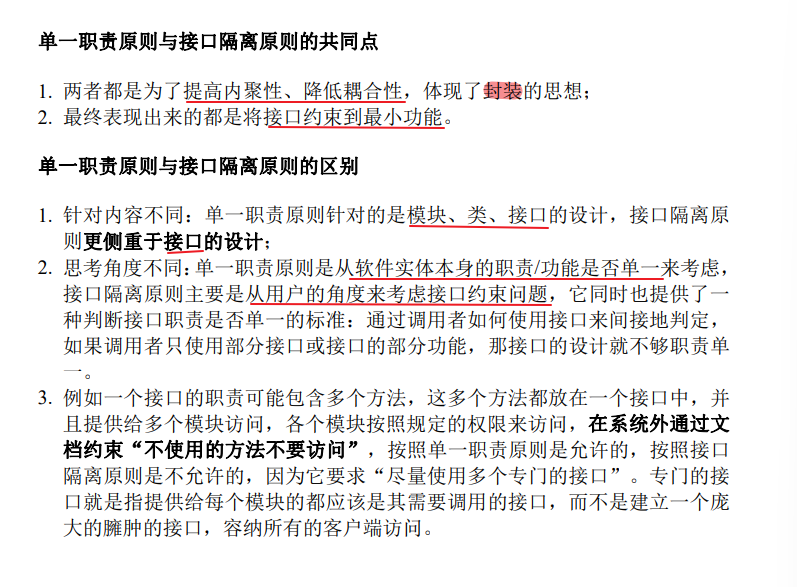
依赖倒置原则
- 高层模块不应该依赖于低层模块，二者都应该依赖于抽象B.
- 抽象不应该依赖于细节，细节应该依赖于抽象
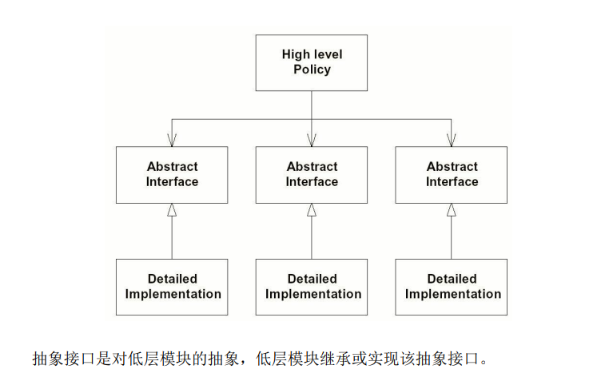
组合/聚合复用原则
尽量使用组合/聚合而非继承来达到复用目的；或者说，是在一个新的对象中使用一些已有的对象，使之成为新对象的一部分，然后新的对象通过向这些对象委托功能达到复用这些对象的目的。
只有当以下的 Coad 条件全部被满足时，才应当使用继承关系：：
1）派生类是基类的一个特殊种类，而不是基类的一个角色，也就是区分"has a"和"is a"。只有"is a"关系才符合继承关系，"has a"关系应当用聚合来描述。
2）永远不会出现需要将派生类换成另外一个类的派生类的情况。如果不能肯定将来是否会变成另外一个派生类的话，就不要使用继承。
3）派生类具有扩展基类的责任，而不是具有置换掉（override）或注销掉（nullify）基类的责任。如果一个派生类需要大量的置换掉基类的行为，那么这个类就不应该是这个基类的派生类。
4）只有在分类学角度上有意义时，才可以使用继承
通过组合/聚合复用的优缺点
优点：
- 新对象存取成员对象的唯一方法是通过成员对象的接口；
- 这种复用是黑箱复用，因为成员对象的内部细节是新对象所看不见的；
- 这种复用更好地支持封装性；
- 这种复用实现上的相互依赖性比较小；
- 每一个新的类可以将焦点集中在一个任务上；
- 这种复用可以在运行时间内动态进行，新对象可以动态的引用与子对象类型相同的对象。
- 作为复用手段可以应用到几乎任何环境中去
缺点:
就是系统中会有较多的对象需要管理。
通过继承来进行复用的优缺点
优点：
新的实现较为容易，因为基类的大部分功能可以通过继承的关系自动进入派生类。 修改和扩展继承而来的实现较为容易。
缺点：
- 继承复用破坏封装性，因为继承将基类的实现细节暴露给派生类。由于基类的内部细节常常是对于派生类透明的，所以这种复用是透明的复用，又称**“白箱”复用**。
- 如果基类发生改变，那么派生类的实现也不得不发生改变。从基类继承而来的实现是静态的，不可能在运行时间内发生改变，没有足够的灵活性。
设计模式概述
设计模式(Design Pattern)是一套被反复使用、多数人知晓的、经过分类编目的、代码设计经验的总结，使用设计模式是为了可复用代码、让代码更容易被他人理解、保证代码可靠性等。
设计模式一般有如下几个基本要素：模式名称、问题、目的、解决方案、效果、实例代码和相关设计模式，其中的关键元素包括以下四个方面：
•模式名称 (Pattern name)
•问题 (Problem)
•解决方案 (Solution)
•效果 (Consequences)
分类
根据其目的（模式是用来做什么的）可分为创建型(Creational)，结构型(Structural)和行为型(Behavioral)三种：
•创建型模式主要用于创建对象。
•结构型模式主要用于处理类或对象的组合。
•行为型模式主要用于描述对类或对象怎样交互和怎样分配职责。
根据范围，即模式主要是用于处理类之间关系还是处理对象之间的关系，可分为类模式和对象模式两种：
•类模式处理类和子类之间的关系，这些关系通过继承建立，在编译时刻就被确定下来，是属于静态的。
•对象模式处理对象间的关系，这些关系在运行时刻变化，更具动态性。
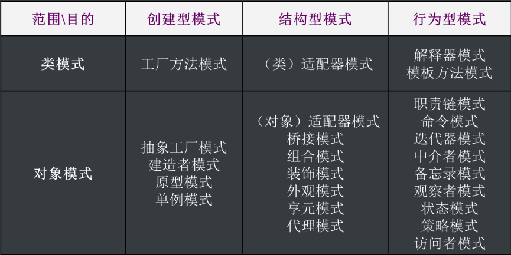
创建型模式
创建型模式(Creational Pattern)关注的是对象的创建，将创建对象(类的实例化)的过程进行了抽象和封装，分离了对象创建和对象使用。
一个类创建型模式使用继承改变被实例化的类
一个对象创建型模式将实例化委托给另一个对象。
创建型模式有两个重要的特点：
1） 客户不知道对象的具体类是什么（除非看源代码）
2） 隐藏了对象实例是如何被创建和组织的
- 简单工厂模式
- 工厂方法模式
- 抽象工厂模式
- 建造者模式
- 原型模式
- 单例模式
简单工厂模式
简单工厂模式(Simple Factory Pattern)：又称为静态工厂方法模式。在简单工厂模式中，可以根据参数的不同返回不同类的实例。简单工厂模式专门定义一个类来负责创建其他类的实例，被创建的实例通常都具有共同的父类。
类图
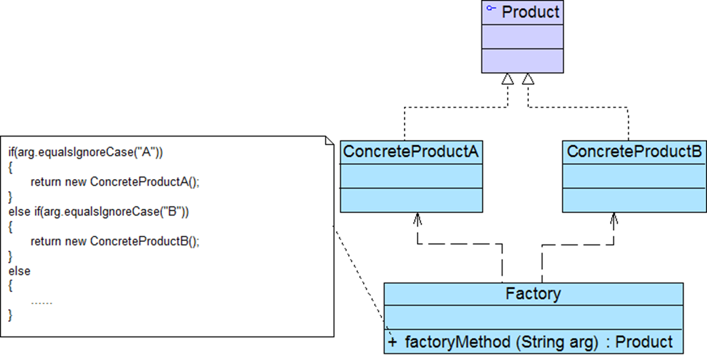
模式结构
•Factory：工厂角色，负责实现创建所有实例的内部逻辑
•Product：抽象产品角色，是所创建的所有对象的父类，负责描述所有实例所共有的公共接口
•ConcreteProduct：具体产品角色是创建目标，所有创建的对象都充当这个角色的某个具体类的实例
模式分析
- 将对象的创建和对象本身业务处理分离可以降低系统的耦合度，使得两者修改起来都相对容易。
- 在调用工厂类的工厂方法时，由于工厂方法是静态方法，使用起来很方便，可通过类名直接调用，而且只需要传入一个简单的参数即可，在实际开发中，还可以在调用时将所传入的参数保存在XML等格式的配置文件中，修改参数时无须修改任何Java源代码。
- 简单工厂模式最大的问题在于工厂类的职责相对过重，增加新的产品需要修改工厂类的判断逻辑，这一点与开闭原则是相违背的。
- 简单工厂模式的要点在于：当你需要什么，只需要传入一个正确的参数，就可以获取你所需要的对象，而无须知道其创建细节。
优点
- 实现了对责任的分割，它提供了专门的工厂类用于创建对象。
- 客户端无须知道所创建的具体产品类的类名，只需要知道具体产品类所对应的参数即可
- 通过引入配置文件，可以在不修改任何客户端代码的情况下更换和增加新的具体产品类，在一定程度上提高了系统的灵活性
缺点
- 由于工厂类集中了所有产品创建逻辑，一旦不能正常工作，整个系统都要受到影响。
- 使用简单工厂模式将会增加系统中类的个数，在一定程序上增加了系统的复杂度和理解难度。
- 系统扩展困难，一旦添加新产品就不得不修改工厂逻辑，在产品类型较多时，有可能造成工厂逻辑过于复杂，不利于系统的扩展和维护。
- 简单工厂模式由于使用了静态工厂方法，造成工厂角色无法形成基于继承的等级结构。
适用环境
- 工厂类负责创建的对象比较少：由于创建的对象较少，不会造成工厂方法中的业务逻辑太过复杂。
- 客户端只知道传入工厂类的参数，对于如何创建对象不关心：客户端既不需要关心创建细节，甚至连类名都不需要记住，只需要知道类型所对应的参数
模式扩展
简单工厂模式的简化：
在有些情况下工厂类可以由抽象产品角色扮演，一个抽象产品类同时也是子类的工厂，也就是说把静态工厂方法写到抽象产品类中。
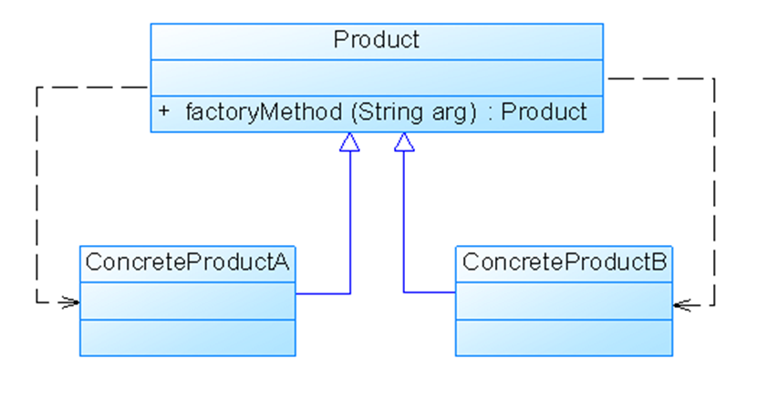
模式本质
实现简单工厂模式的难点就在于 “如何选择”实现，前面讲到了几种传递参数的方法，那都是静态的参数，还可以实现成为动态的参数。比如：在运行期间，由工厂去读取某个内存的值，或者是去读取数据库中的值，然后根据这个值来选择具体的实现等等。
工厂方法模式
简单工厂模式最大的缺点是当有新产品要加入到系统中时，必须修改工厂类，加入必要的处理逻辑，这违背了“开闭原则”。
在工厂方法模式中，工厂父类负责定义创建产品对象的公共接口，而工厂子类则负责生成具体的产品对象，这样做的目的是将产品类的实例化操作延迟到工厂子类中完成，即通过工厂子类来确定究竟应该实例化哪一个具体产品类。
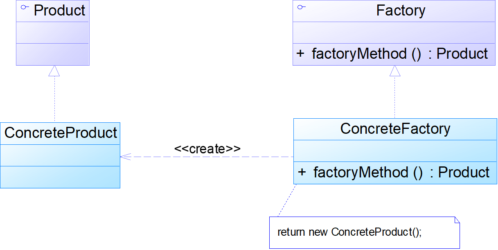
模式结构
•Product：抽象产品是定义产品的接口，是工厂方法模式所创建对象的超类型，是产品对象的共同父类或接口
•ConcreteProduct：具体产品实现了抽象产品接口，某种类型的具体产品由专门的具体工厂创建
•Factory：抽象工厂声明了工厂方法，返回一个产品，与具体应用无关，是具体工厂的共同父类或接口
•ConcreteFactory：具体工厂实现了抽象工厂中的工厂方法，返回一个具体产品类的实例，与应用密切相关
模式分析
在工厂方法模式中，核心的工厂类不再负责所有产品的创建，而是将具体创建工作交给子类去做。这个核心类仅仅负责给出具体工厂必须实现的接口，而不负责哪一个产品类被实例化这种细节，这使得工厂方法模式可以允许系统在不修改工厂角色的情况下引进新产品。
工厂方法模式退化后可以演变成简单工厂模式。
优点
- 在工厂方法模式中，工厂方法用来创建客户所需要的产品，同时还向客户隐藏了哪种具体产品类将被实例化这一细节，用户只需要关心所需产品对应的工厂，无须关心创建细节，甚至无须知道具体产品类的类名。
- 基于工厂角色和产品角色的多态性设计是工厂方法模式的关键。它能够使工厂可以自主确定创建何种产品对象，而如何创建这个对象的细节则完全封装在具体工厂内部。工厂方法模式之所以又被称为多态工厂模式，是因为所有的具体工厂类都具有同一抽象父类。
- 使用工厂方法模式的另一个优点是在系统中加入新产品时，无须修改抽象工厂和抽象产品提供的接口，无须修改客户端，也无须修改其他的具体工厂和具体产品，而只要添加一个具体工厂和具体产品就可以了。这样，系统的可扩展性也就变得非常好，完全符合“开闭原则”。
缺点
- 在添加新产品时，需要编写新的具体产品类，而且还要提供与之对应的具体工厂类，系统中类的个数将成对增加，在一定程度上增加了系统的复杂度，有更多的类需要编译和运行，会给系统带来一些额外的开销。
- 由于考虑到系统的可扩展性，需要引入抽象层，在客户端代码中均使用抽象层进行定义，增加了系统的抽象性和理解难度，且在实现时可能需要用到DOM、反射等技术，增加了系统的实现难度。
适用环境
- 一个类不知道它所需要的对象的类：在工厂方法模式中，客户端不需要知道具体产品类的类名，只需要知道所对应的工厂即可，具体的产品对象由具体工厂类创建；客户端需要知道创建具体产品的工厂类。
- 一个类通过其子类来指定创建哪个对象：在工厂方法模式中，对于抽象工厂类只需要提供一个创建产品的接口，而由其子类来确定具体要创建的对象，利用面向对象的多态性和里氏代换原则，在程序运行时，子类对象将覆盖父类对象，从而使得系统更容易扩展。
- 将创建对象的任务委托给多个工厂子类中的某一个，客户端在使用时可以无须关心是哪一个工厂子类创建产品子类，需要时再动态指定，可将具体工厂类的类名存储在配置文件或数据库中。
模式扩展
- 使用多个工厂方法：在抽象工厂角色中可以定义多个工厂方法，从而使具体工厂角色实现这些不同的工厂方法，这些方法可以包含不同的业务逻辑，以满足对不同的产品对象的需求。
- 产品对象的重复使用：工厂对象将已经创建过的产品保存到一个集合（如数组、List等）中，然后根据客户对产品的请求，对集合进行查询。如果有满足要求的产品对象，就直接将该产品返回客户端；如果集合中没有这样的产品对象，那么就创建一个新的满足要求的产品对象，然后将这个对象在增加到集合中，再返回给客户端。
- 多态性的丧失和模式的退化：如果工厂仅仅返回一个具体产品对象，便违背了工厂方法的用意，发生退化，此时就不再是工厂方法模式了。一般来说，工厂对象应当有一个抽象的父类型，如果工厂等级结构中只有一个具体工厂类的话，抽象工厂就可以省略，也将发生了退化。当只有一个具体工厂，在具体工厂中可以创建所有的产品对象，并且工厂方法设计为静态方法时，工厂方法模式就退化成简单工厂模式。
模式本质
延迟到子类来选择实现
工厂方法模式很好的体现了“依赖倒置原则”。
抽象工厂模式
提供一个创建一系列相关或相互依赖对象的接口，而无须指定它们具体的类。抽象工厂模式又称为Kit模式，属于对象创建型模式。
类图
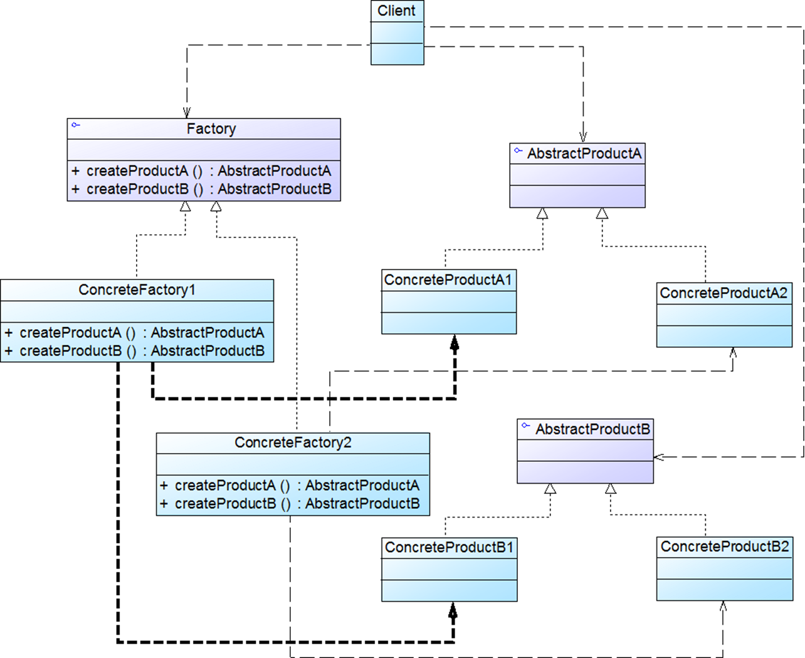
模式结构
AbstractFactory：抽象工厂用于声明生成抽象产品的方法，在一个抽象工厂中可以定义一组方法，每一个方法对应一个产品等级结构
ConcreteFactory：具体工厂实现了抽象工厂声明的生成抽象产品的方法，生成一组具体产品，这些产品构成了一个产品族，每一个产品都位于某个产品等级结构中
AbstractProduct：抽象产品为每种产品声明接口，在抽象产品中定义了产品的抽象业务方法
Product：具体产品定义具体工厂生产的具体产品对象，实现抽象产品接口中定义的业务方法
优点
- 抽象工厂模式隔离了具体类的生成，使得客户并不需要知道什么被创建。由于这种隔离，更换一个具体工厂就变得相对容易。所有的具体工厂都实现了抽象工厂中定义的那些公共接口，因此只需改变具体工厂的实例，就可以在某种程度上改变整个软件系统的行为。另外，应用抽象工厂模式可以实现高内聚低耦合的设计目的，因此抽象工厂模式得到了广泛的应用。
- 当一个产品族中的多个对象被设计成一起工作时，它能够保证客户端始终只使用同一个产品族中的对象。这对一些需要根据当前环境来决定其行为的软件系统来说，是一种非常实用的设计模式。
- 增加新的具体工厂和产品族很方便，无须修改已有系统，符合“开闭原则”。
缺点
- 在添加新的产品对象时，难以扩展抽象工厂来生产新种类的产品，这是因为在抽象工厂角色中规定了所有可能被创建的产品集合，要支持新种类的产品就意味着要对该接口进行扩展，而这将涉及到对抽象工厂角色及其所有子类的修改，显然会带来较大的不便。
- 开闭原则的倾斜性（增加新的工厂和产品族容易，增加新的产品等级结构麻烦）
适用环境
•一个系统不应当依赖于产品类实例如何被创建、组合和表达的细节，这对于所有类型的工厂模式都是重要的。
•系统中有多于一个的产品族，而每次只使用其中某一产品族。
•属于同一个产品族的产品将在一起使用，这一约束必须在系统的设计中体现出来。
•系统提供一个产品类的库，所有的产品以同样的接口出现，从而使客户端不依赖于具体实现。
模式扩展
抽象工厂模式的这种性质称为“开闭原则”的倾斜性，抽象工厂模式以一种倾斜的方式支持增加新的产品，它为新产品族的增加提供方便，但不能为新的产品等级结构的增加提供这样的方便。
工厂模式的退化:当抽象工厂模式中每一个具体工厂类只创建一个产品对象，也就是只存在一个产品等级结构时，抽象工厂模式退化成工厂方法模式；当工厂方法模式中抽象工厂与具体工厂合并，提供一个统一的工厂来创建产品对象，并将创建对象的工厂方法设计为静态方法时，工厂方法模式退化成简单工厂模式。
模式本质
选择产品簇的实现。
工厂方法是选择单个产品的实现，虽然一个类里面可以有多个工厂方法，但是这些方法之间一般是没有联系的，即使看起来像有联系。
但是抽象工厂着重的就是为一个产品簇选择实现，定义在抽象工厂里面的方法通常是有联系的，它们是产品的某一部分或者相互依赖的。如果抽象工厂里面只定义一个方法，直接创建产品，那么就退化称为工厂方法了。
建造者模式
将一个复杂对象的构建与它的表示分离，使得同样的构建过程可以创建不同的表示。
建造者模式是一步一步创建一个复杂的对象，它允许用户只通过指定复杂对象的类型就可以构建它们，用户不需要知道内部的具体构建细节。建造者模式属于对象创建型模式。根据中文翻译的不同，建造者模式又可以称为生成器模式。
类图
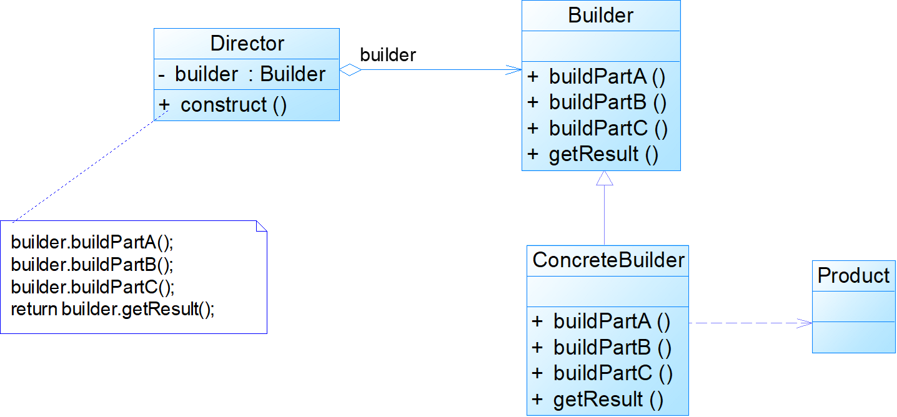
模式结构
Builder：抽象建造者为创建一个产品对象的各个部件指定抽象接口
ConcreteBuilder：具体建造者实现了抽象建造者接口，实现各个部件的构造和装配方法，定义并明确它所创建的复杂对象，也可以提供一个方法返回创建好的复杂产品对象
Director：指挥者负责安排复杂对象的建造次序，指挥者与抽象建造者之间存在关联关系，可以在其construct方法中调用建造者对象的部件构造与装配方法，完成复杂对象的建造
Product：产品角色是被构建的复杂对象，包含多个组成部件
模式分析
建造者模式的结构中引入了一个指挥者类Director，该类的作用主要有两个：
- 一方面它隔离了客户与生产过程；
- 另一方面它负责控制产品的生成过程。指挥者针对抽象建造者编程，客户端只需要知道具体建造者的类型，即可通过指挥者类调用建造者的相关方法，返回一个完整的产品对象。
客户端代码:
1 | Builder builder = new ConcreteBuilder(); |
在客户端代码中，无须关心产品对象的具体组装过程，只需确定具体建造者的类型即可，建造者模式将复杂对象的构建与对象的表示分离开来，这样使得同样的构建过程可以创建出不同的表示。
模式实例
KFC套餐
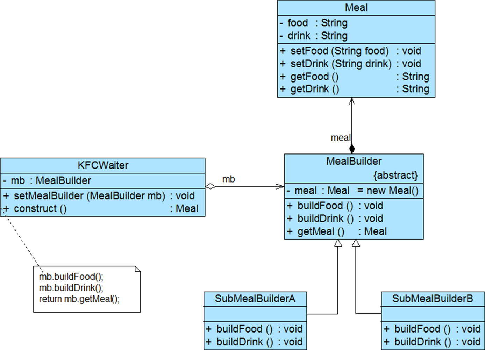
优点
- 在建造者模式中，*客户端不必知道产品内部组成的细节，将产品本身与产品的创建过程解耦，使得相同的创建过程可以创建不同的产品对象。
- 每一个具体建造者都相对独立，而与其他的具体建造者无关，因此可以很方便地替换具体建造者或增加新的具体建造者，用户使用不同的具体建造者即可得到不同的产品对象。
- **可以更加精细地控制产品的创建过程。**将复杂产品的创建步骤分解在不同的方法中，使得创建过程更加清晰，也更方便使用程序来控制创建过程。
- 增加新的具体建造者无须修改原有的代码，指挥者类针对抽象建造者类编程，系统扩展方便，符合“开闭原则”
缺点
- 建造者模式所创建的产品一般具有较多的共同点，其组成部分相似，如果产品之间的差异性很大，则不适合使用建造者模式，因此其使用范围受到一定的限制。
- 如果产品的内部变化复杂，可能会导致需要定义很多具体建造者类来实现这种变化，导致系统变得很庞大。
适用环境
•需要生成的产品对象有复杂的内部结构，这些产品对象通常包含多个成员属性。
•需要生成的产品对象的属性相互依赖，需要指定其生成顺序。
•对象的创建过程独立于创建该对象的类。在建造者模式中引入了指挥者类，将创建过程封装在指挥者类中，而不在建造者类中。
•隔离复杂对象的创建和使用，并使得相同的创建过程可以创建不同的产品对象。
应用
- JavaMail
- 游戏软件中的地图 人物角色
模式扩展
建造者模式的简化
•省略抽象建造者角色：如果系统中只需要一个具体建造者的话，可以省略掉抽象建造者。
•省略指挥者角色：在具体建造者只有一个的情况下，如果抽象建造者角色已经被省略掉，那么还可以省略指挥者角色。
•把指挥者类和抽象建造者进行合并，简化了系统结构，但同时也加重了抽象建造者类的职责，也不符合单一职责原则，如果construct()过于复杂，建议还是封装到指挥者类中。
与抽象工厂模式
- 与抽象工厂模式相比，建造者模式返回一个组装好的完整产品，而抽象工厂模式返回一系列相关的产品，这些产品位于不同的产品等级结构，构成了一个产品族。
- 在抽象工厂模式中，客户端实例化工厂类，然后调用工厂方法获取所需产品对象，而在建造者模式中，客户端可以不直接调用建造者的相关方法，而是通过指挥者类来指导如何生成对象，包括对象的组装和建造过程，它侧重于一步步构造一个复杂对象，返回一个完整的对象。
- 如果将抽象工厂模式看成汽车配件生产工厂，生产一个产品族的产品，那么建造者模式就是一个汽车组装工厂，通过对部件的组装可以返回一辆完整的汽车。
本质
分离整体构建算法和部件构造
原型模式
对比拷贝构造，通过原型对象创建新的对象，就不再需要关心/知道这个对象本身的类型，如复印机。
对比拷贝构造，原型模式有助于符合里氏替换原则，如水果篮里放入水果副本。
原型模式(Prototype Pattern)：原型模式是一种对象创建型模式，**用原型实例指定创建对象的种类，并且通过复制这些原型创建新的对象。**原型模式允许一个对象再创建另外一个可定制的对象，无须知道任何创建的细节。
原型模式的基本工作原理是通过将一个原型对象传给那个要发动创建的对象，这个要发动创建的对象通过请求原型对象拷贝原型自己来实现创建过程
类图

模式结构
Prototype：抽象原型类是定义具有克隆自己的方法的接口
ConcretePrototype：具体原型类实现具体的克隆方法，在克隆方法中返回自己的一个克隆对象
Client：在客户类中只需要直接实例化或通过工厂方法等方式创建一个对象，再通过调用该对象的克隆方法复制得到多个相同的对象